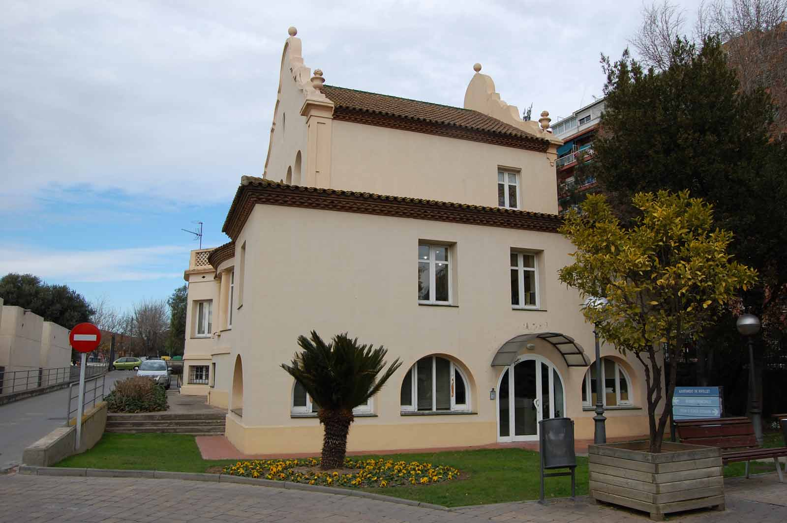
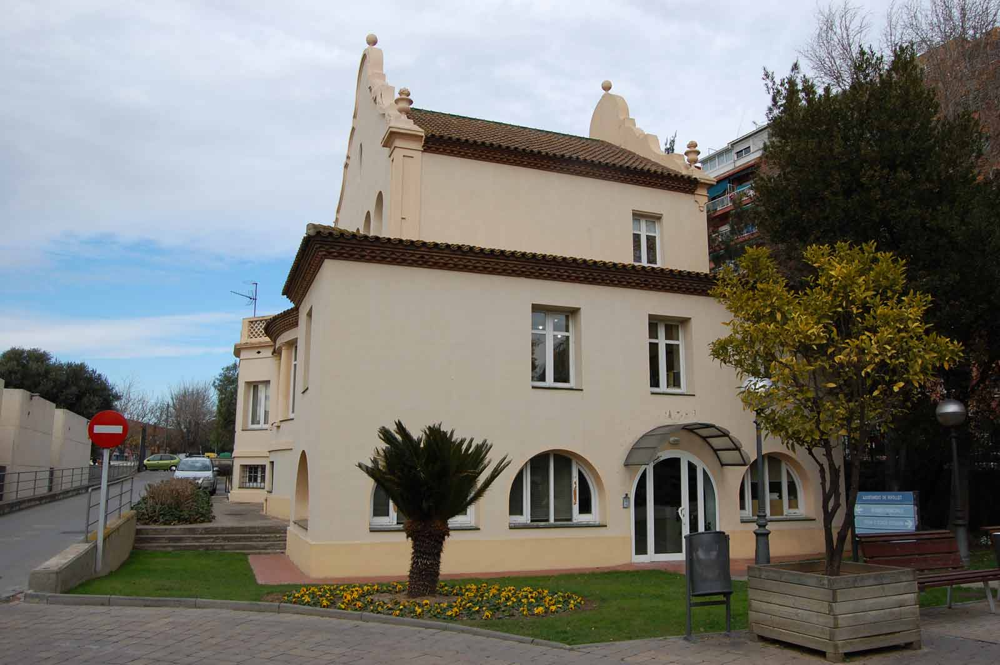
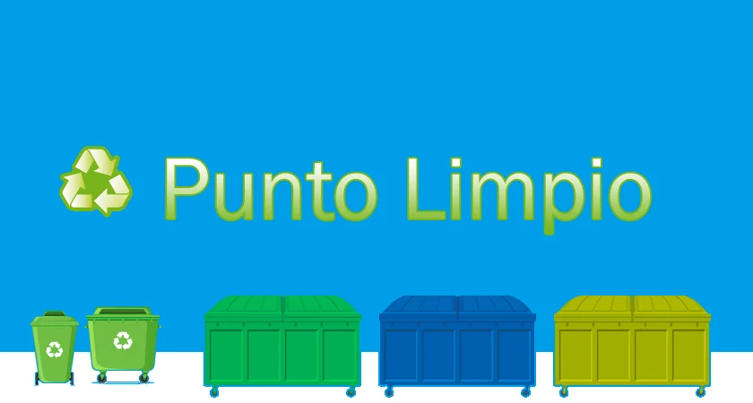
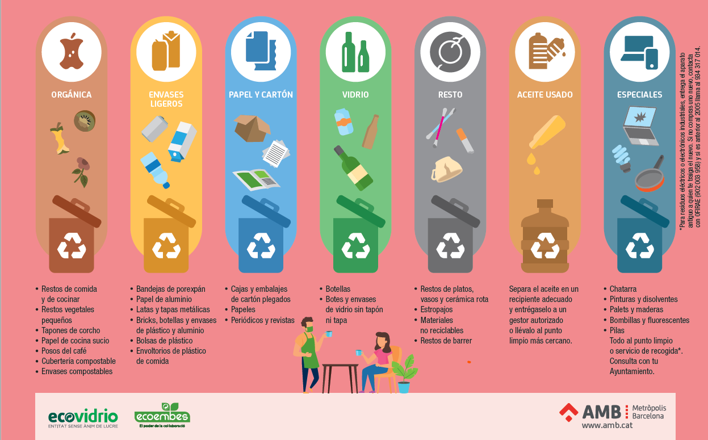

Evento: Día del Medio Ambiente
El próximo sábado se llevará a cabo una jornada de limpieza comunitaria en el Parque Central. ¡Te esperamos!
El próximo sábado se llevará a cabo una jornada de limpieza comunitaria en el Parque Central. ¡Te esperamos!
Se ha inaugurado un nuevo punto de reciclaje en la Plaza Mayor. Recicla tus residuos y contribuye al medio ambiente.
El reciclaje es fundamental para conservar recursos naturales, reducir la contaminación, ahorrar energía y disminuir los residuos en vertederos. Además, contribuye a mitigar el cambio climático, fomenta la economía circular, genera empleo y promueve la conciencia ambiental. Es una práctica clave para un desarrollo sostenible y el cuidado del planeta.
Descubre cómo separar correctamente los residuos y reducir el impacto ambiental en nuestro día a día.
